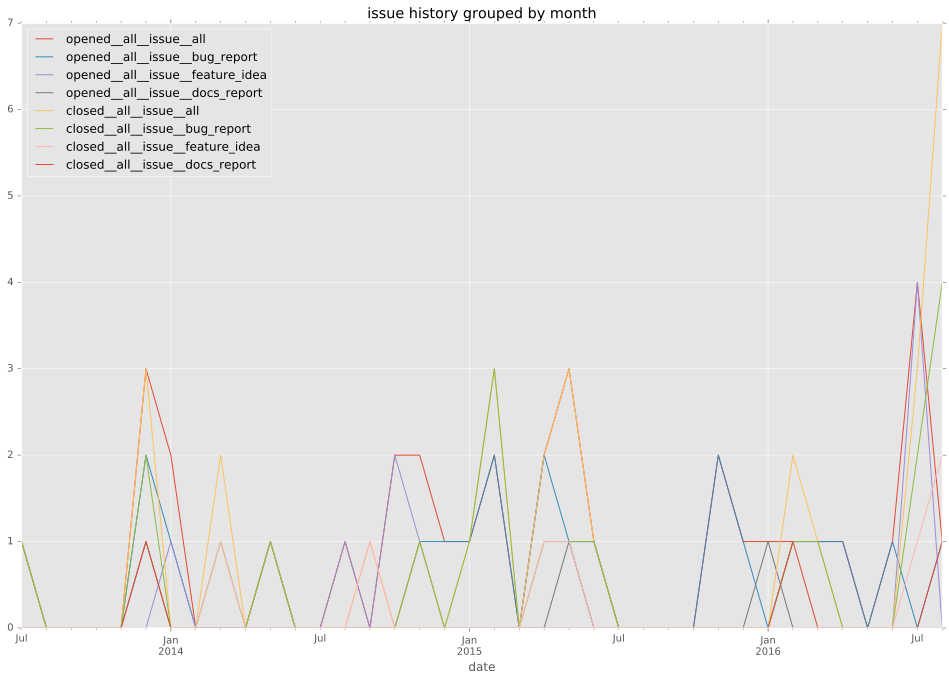
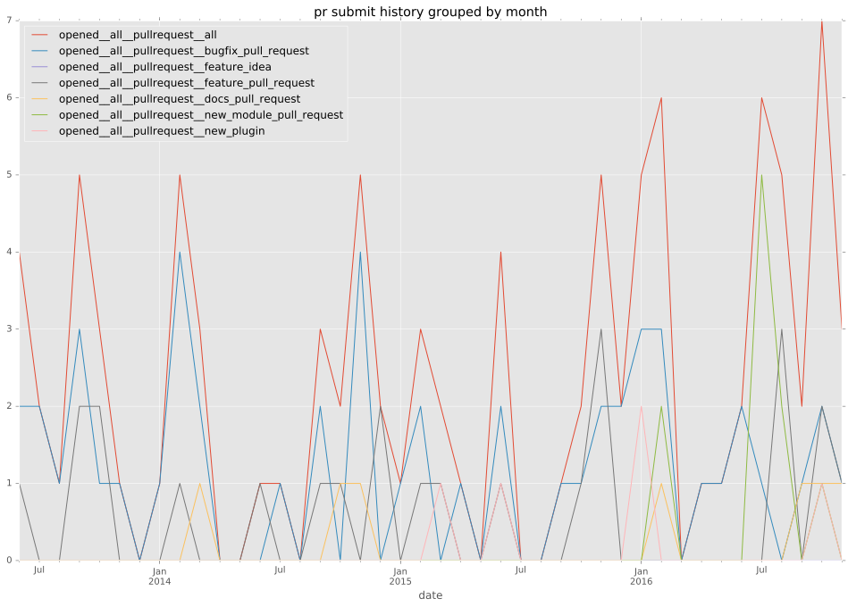
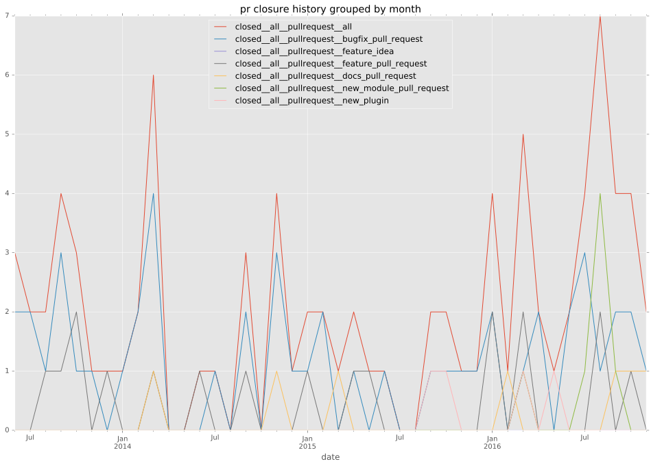

authors
- zbal
maintainers
- alukovenko
contributors
- risaacson : 1 commits
- nishiokay : 5 commits
- MikeCaspar : 5 commits
- Hypermanzer : 3 commits
- benjixx : 3 commits
- romain-dartigues : 2 commits
- dmkoch : 5 commits
- alimony : 4 commits
- mpdehaan : 8 commits
- edwlarkey : 1 commits
- linefeedse : 18 commits
- zimbatm : 3 commits
- jctanner : 1 commits
- ryanobjc : 1 commits
- rebost : 1 commits
- bryanlarsen : 5 commits
- gianlucaborello : 1 commits
- ralphbean : 23 commits
- zbal : 63 commits
- abadger : 19 commits
- bcoca : 3 commits
- jimi-c : 2 commits
total issue counts
unknown: 2
bugfix pull request: 55
docs report: 3
pullrequest: 105
docs pull request: 5
feature pull request: 26
feature idea: 8
issue: 35
new plugin: 17
bug report: 24
issue history

pullrequest history


days open by issue type
feature pull request
count: 30
std: 129.083956463
min: 1
max: 554
median: 24.0
mean: 66.4333333333
all
count: 165
std: 99.674769722
min: 0
max: 609
median: 5.0
mean: 46.7393939394
pullrequest
count: 0
std: nan
min: nan
max: nan
median: nan
mean: nan
docs pull request
count: 10
std: 52.1212262156
min: 0
max: 128
median: 5.0
mean: 29.8
docs report
count: 3
std: 245.577550548
min: 0
max: 435
median: 20.0
mean: 151.666666667
bugfix pull request
count: 74
std: 50.7224536907
min: 0
max: 213
median: 0.0
mean: 23.5810810811
feature idea
count: 6
std: 232.263140999
min: 12
max: 609
median: 48.5
mean: 159.833333333
issue
count: 0
std: nan
min: nan
max: nan
median: nan
mean: nan
new plugin
count: 14
std: 55.1218929004
min: 0
max: 189
median: 36.0
mean: 51.5
bug report
count: 25
std: 116.96865677
min: 0
max: 482
median: 2.0
mean: 61.4
closures grouped by total days open